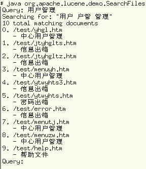

September 04, 2003
Lucene学习笔记（2）
 不仅仅在推广和介绍方面，车东在Lucene的汉化及web应用，也作出了极大的极大的贡献。他将自己的汉化和web应用两方面的成果，放在sourceforge上成了开源的项目。下面主要是对这个项目的学习笔记。
不仅仅在推广和介绍方面，车东在Lucene的汉化及web应用，也作出了极大的极大的贡献。他将自己的汉化和web应用两方面的成果，放在sourceforge上成了开源的项目。下面主要是对这个项目的学习笔记。
对Lucene的汉化，车东开发了两个Analyzer，一个是二元切分，一个单字切分。利用这两个中的任一个进行分析，都可以进行汉字的索引和检索了。我把这两个Analyzer编译后一起打入到lucene-1.2.jar中了，如果不愿自己动手进行编译这两个Analyzer的朋友，可以从这儿下载。
 有了新的Analyzer，我把IndexFiles、IndexHTML和SearchFiles中的Analyzer也用了新CJKAnalyzer做了替换，并重新编译打了包lucene-demo-1.2.jar，可以从这儿下载。包内带有修改后的三个java文件。
用上面两个jar文件，分别替换同名的原来的文件，就可以索引和检索汉语了。右面是我做的测试。
Lucene学习笔记（3）
Comments
不错。
Posted by: QQ吧精彩 at December 30, 2003 01:00 PM谢谢分享。
Posted by: yafeng at September 28, 2003 05:51 PMPost a comment